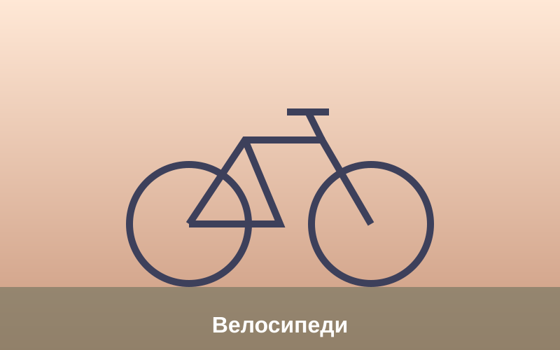
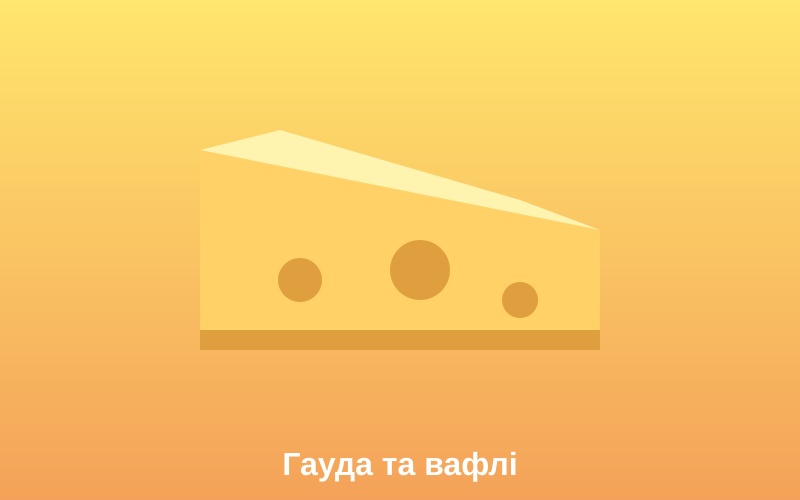

🏛️ Визначні пам'ятки
- Квартал каналів — понад сотня островів і півтори тисячі мостів.
- Рейксмюзеум — «Нічна варта» Рембрандта заввишки з двоповерховий будинок.
- Музей Ван Гога — найбільша колекція картин художника.
- Будинок Анни Франк — тиха й важка екскурсія, яку важко забути.

🍽️ Кухня та гастрономія
Хлібні вафлі-строопваффелі, сир гауда, оселедець із цибулею та гарячі бітерболлен 🧀. На ринку Альберта Койпа ми їли свіжу вафлю з карамеллю просто з-під качалки, а ввечері замовили картоплю фрі з соусами за голландським звичаєм.

🎭 Культура та традиції
Голландці цінують свободу, відкритість і практичність. Вікна не завішують, бо «нам нічого ховати», а велодоріжки мають власні світлофори. Щороку 27 квітня країна фарбується в помаранчевий на День короля.
Віртуальна прогулянка мапою
💭 Особисті історії
Під дощем ми сховалися в крихітній кав'ярні на березі каналу. Господар приніс гарячу каву й вафлі, жартував про погоду й запевнив, що дощ скоро скінчиться. Він скінчився — і місто засяяло, наче його щойно вимили.